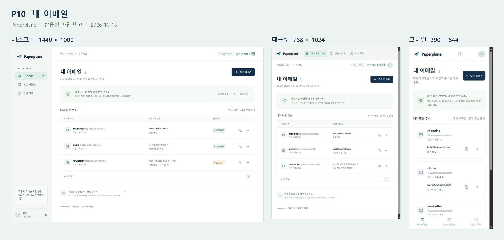

DESIGN REFERENCE · 2026-10-18
Paperplane
반응형 화면 가이드
현재 HTML 시안을 실제 브라우저에서 촬영한 화면 설명서입니다. 화면의 목적과 사용 흐름을 확인하고, 같은 화면이 데스크톱·태블릿·모바일에서 어떻게 달라지는지 비교할 수 있습니다.
기본 화면 20종과 주요 상호작용 상태 12종을 세 가지 크기로 촬영했습니다. 사진은 샘플 데이터를 사용하는 디자인 프로토타입이며 실제 API·OAuth·메일 전송 결과를 뜻하지 않습니다. 프리미엄 기능은 포함하지 않습니다.
20기본 화면
12상호작용 상태
96실제 촬영 사진

같은 내 이메일 화면이 넓은 행 목록에서 모바일 카드로 달라지는 모습입니다.문서 읽는 방법
- 목차 또는 검색으로 화면을 찾습니다.
- 나란히 비교하거나 원하는 화면 크기만 선택합니다.
- 사진을 누르면 확대할 수 있습니다. 확대 창의 원본 크기로 세부 글자를 확인합니다.
- 기본 화면의 상태 보기 링크에서 오류·확인·완료 동작을 이어서 봅니다.
촬영 기준
아래 크기는 브라우저에 설정한 CSS 뷰포트입니다. 사진은 화면에 보이는 영역을 촬영했으며, 스크롤이 필요한 화면의 하단은 일부 상태 사진에서 따로 보여줍니다. 브라우저 스크롤바와 캡처 배율 때문에 원본 이미지의 픽셀 크기는 일부 다를 수 있습니다.
| 구분 | 설정 크기 | 기본 구조 |
|---|
| 데스크톱 | 1440 × 1000 | 측면 메뉴와 넓은 콘텐츠 |
| 태블릿 | 768 × 1024 | 상단 메뉴와 축소된 열 구성 |
| 모바일 | 390 × 844 | 한 열 콘텐츠와 하단 메뉴 |
해당하는 화면이 없습니다. 다른 단어로 검색해 주세요.
데스크톱1440 × 1000
서비스 설명과 주소 연결 예시를 나란히 배치합니다.원본 이미지 열기 ↗태블릿768 × 1024
2열 소개 구성을 유지하되 제목과 여백을 줄입니다.원본 이미지 열기 ↗모바일390 × 844
제목·시작 버튼·주소 예시를 세로로 쌓습니다. 다음 내용은 스크롤로 이어집니다.원본 이미지 열기 ↗주요 동작
- 나만의 주소 만들기는 이메일 가입으로 연결됩니다.
- 데모 둘러보기는 샘플 주소가 있는 내 이메일로 이동합니다.
- 화면 아래에는 주소 생성·메일함 연결·전달 조건 설정의 세 단계를 설명합니다.
사진을 볼 때 확인할 점
종이비행기 로고와 주소 → 메일함 시각 요소가 서비스의 전달 개념을 보여줍니다. 모바일에서는 아래로 스크롤해야 예시 주소와 이용 순서를 모두 볼 수 있습니다.
데스크톱1440 × 1000
브랜드 설명 패널과 입력 폼을 좌우로 나눕니다.원본 이미지 열기 ↗태블릿768 × 1024
브랜드 패널과 폼의 2열 구성을 유지하고 여백을 줄입니다.원본 이미지 열기 ↗모바일390 × 844
브랜드 설명 패널을 접고 로고와 입력 폼만 한 열로 보여줍니다.원본 이미지 열기 ↗주요 동작
- 이메일·비밀번호 입력과 Google·네이버 버튼을 구분해 배치했습니다.
- 비밀번호 보기 버튼으로 입력 내용을 확인할 수 있습니다.
- 비밀번호 복구와 회원가입 링크를 폼 아래에 제공합니다.
사진을 볼 때 확인할 점
소셜 버튼은 외부 서비스에 접속하지 않고 결과 예시 화면으로 이동합니다. 샘플 입력에는 실제 계정 정보를 사용하지 않습니다.
데스크톱1440 × 1000
브랜드 설명 패널과 입력 폼을 좌우로 나눕니다.원본 이미지 열기 ↗태블릿768 × 1024
브랜드 패널과 폼의 2열 구성을 유지하고 여백을 줄입니다.원본 이미지 열기 ↗모바일390 × 844
브랜드 설명 패널을 접고 로고와 입력 폼만 한 열로 보여줍니다.원본 이미지 열기 ↗주요 동작
- 이메일 한 항목에 집중하고 인증 코드 받기를 주 행동으로 둡니다.
- 기존 사용자는 로그인 링크로 돌아갈 수 있습니다.
- 유효하지 않은 이메일은 입력 검증으로 안내합니다.
사진을 볼 때 확인할 점
프로토타입에서는 실제 인증 메일을 보내지 않습니다. 다음 화면에서 사용할 데모 코드는 123456입니다.
데스크톱1440 × 1000
브랜드 설명 패널과 입력 폼을 좌우로 나눕니다.원본 이미지 열기 ↗태블릿768 × 1024
브랜드 패널과 폼의 2열 구성을 유지하고 여백을 줄입니다.원본 이미지 열기 ↗모바일390 × 844
브랜드 설명 패널을 접고 로고와 입력 폼만 한 열로 보여줍니다.원본 이미지 열기 ↗주요 동작
- 여섯 자리 코드를 하나의 입력란에 입력하거나 붙여넣습니다.
- 남은 시간과 새 코드 받기를 함께 보여줍니다.
- 이메일을 잘못 입력했다면 다른 이메일로 가입하기로 돌아갑니다.
사진을 볼 때 확인할 점
코드를 입력했다고 자동 제출하지 않습니다. 이 화면은 가입용 인증이며, 받는 메일함 인증과 재요청 간격·시도 제한이 다릅니다.
P05소개와 인증
가입 정보 입력
가입에 사용할 이름과 비밀번호를 정하는 마지막 입력 단계입니다.
이름과 비밀번호 입력 → 가입 완료 → 빈 내 이메일
시안 경로 #/signup/profile · 화면 진입 위치 촬영
데스크톱1440 × 1000
브랜드 설명 패널과 입력 폼을 좌우로 나눕니다.원본 이미지 열기 ↗태블릿768 × 1024
브랜드 패널과 폼의 2열 구성을 유지하고 여백을 줄입니다.원본 이미지 열기 ↗모바일390 × 844
브랜드 설명 패널을 접고 로고와 입력 폼만 한 열로 보여줍니다.원본 이미지 열기 ↗주요 동작
- 이름은 2~8자 입력 규칙을 적용합니다.
- 비밀번호의 8자 이상·특수문자 포함 여부를 입력 중 표시합니다.
- 비밀번호 확인이 일치하지 않으면 해당 입력란 아래에 오류를 보여줍니다.
사진을 볼 때 확인할 점
보기 버튼은 입력값을 바꾸지 않고 표시 방식만 전환합니다. 불일치 오류 상태는 S11에서 비교할 수 있습니다.
P06소개와 인증
소셜 인증 결과
소셜 로그인 이후 기존 계정과 신규 가입의 갈림길을 보여주는 결과 예시 화면입니다.
소셜 버튼 → 기존 계정으로 계속 또는 신규 가입
시안 경로 #/auth/callback · 화면 진입 위치 촬영
데스크톱1440 × 1000
브랜드 설명 패널과 입력 폼을 좌우로 나눕니다.원본 이미지 열기 ↗태블릿768 × 1024
브랜드 패널과 폼의 2열 구성을 유지하고 여백을 줄입니다.원본 이미지 열기 ↗모바일390 × 844
브랜드 설명 패널을 접고 로고와 입력 폼만 한 열로 보여줍니다.원본 이미지 열기 ↗주요 동작
- 기존 계정은 내 이메일로 이동합니다.
- 신규 사용자는 이름을 입력하는 소셜 가입으로 이동합니다.
- 외부 계정 연결을 생략한 데모라는 점을 화면 안에서 알립니다.
사진을 볼 때 확인할 점
실제 OAuth 팝업, 권한 동의, 콜백 토큰 교환을 촬영한 것이 아닙니다. 두 개의 버튼은 결과 분기를 검토하기 위한 시안 구성입니다.
데스크톱1440 × 1000
브랜드 설명 패널과 입력 폼을 좌우로 나눕니다.원본 이미지 열기 ↗태블릿768 × 1024
브랜드 패널과 폼의 2열 구성을 유지하고 여백을 줄입니다.원본 이미지 열기 ↗모바일390 × 844
브랜드 설명 패널을 접고 로고와 입력 폼만 한 열로 보여줍니다.원본 이미지 열기 ↗주요 동작
- 비밀번호 입력 없이 이름 한 항목만 보여줍니다.
- 시작하기로 가입 완료 후 주소 만들기 흐름에 진입합니다.
- 일반 가입과 같은 브랜드 패널과 입력 스타일을 사용합니다.
사진을 볼 때 확인할 점
소셜 인증을 통한 신원 확인은 이 시안에서 수행하지 않습니다. 실제 제품에서는 유효한 인증 컨텍스트가 있어야 진입할 화면입니다.
P08소개와 인증
비밀번호 복구
가입한 이메일을 통해 비밀번호 재설정 절차를 시작합니다.
가입 이메일 입력 → 복구 코드 확인 → 새 비밀번호
시안 경로 #/password/reset · 화면 진입 위치 촬영
데스크톱1440 × 1000
브랜드 설명 패널과 입력 폼을 좌우로 나눕니다.원본 이미지 열기 ↗태블릿768 × 1024
브랜드 패널과 폼의 2열 구성을 유지하고 여백을 줄입니다.원본 이미지 열기 ↗모바일390 × 844
브랜드 설명 패널을 접고 로고와 입력 폼만 한 열로 보여줍니다.원본 이미지 열기 ↗주요 동작
- 가입 이메일을 입력하면 같은 화면 안에서 코드 입력 단계로 바뀝니다.
- 코드 확인이 끝난 뒤 새 비밀번호 화면으로 이동합니다.
- 로그인으로 돌아가기 링크를 항상 제공합니다.
사진을 볼 때 확인할 점
기본 사진은 이메일 입력 단계입니다. 이메일 발송과 복구 토큰 검증은 실제 서버에 연결되어 있지 않습니다.
P09소개와 인증
새 비밀번호 설정
복구 인증 이후 새 비밀번호를 입력하고 확인합니다.
새 비밀번호와 확인 입력 → 변경 완료 안내 → 로그인
시안 경로 #/password/reset/new · 화면 진입 위치 촬영
데스크톱1440 × 1000
브랜드 설명 패널과 입력 폼을 좌우로 나눕니다.원본 이미지 열기 ↗태블릿768 × 1024
브랜드 패널과 폼의 2열 구성을 유지하고 여백을 줄입니다.원본 이미지 열기 ↗모바일390 × 844
브랜드 설명 패널을 접고 로고와 입력 폼만 한 열로 보여줍니다.원본 이미지 열기 ↗주요 동작
- 비밀번호 규칙 충족 여부를 표시합니다.
- 두 입력값의 일치 여부를 확인합니다.
- 완료 후 로그인 화면으로 복귀합니다.
사진을 볼 때 확인할 점
갤러리에서는 화면 확인을 위해 직접 열 수 있습니다. 운영 서비스의 인증 권한을 구현하거나 검증한 화면은 아닙니다.
P10주소와 전달
내 이메일
사용자가 만든 주소와 전달 설정을 한곳에서 확인하는 기본 진입 화면입니다.
내 이메일 → 주소 만들기 또는 주소 전달 설정
시안 경로 #/emails · 화면 진입 위치 촬영
데스크톱1440 × 1000
고정 측면 메뉴와 넓은 목록으로 주소와 상태를 비교합니다.원본 이미지 열기 ↗태블릿768 × 1024
주 메뉴가 상단으로 이동하고 목록 열과 보조 정보를 줄입니다.원본 이미지 열기 ↗모바일390 × 844
상단 로고·계정과 하단 주 메뉴를 유지하고 목록을 카드로 읽습니다.원본 이미지 열기 ↗주요 동작
- 주소·받는 메일함·전달 조건을 한 행에서 확인합니다.
- 복사 버튼으로 주소를 복사하고 화살표로 설정에 진입합니다.
- 전달 규칙이 없는 주소는 설정 필요 상태로 구분합니다.
사진을 볼 때 확인할 점
설정 완료는 전달 규칙이 있다는 뜻이며 실제 발송 성공을 보장하지 않습니다. 빈 목록·로딩·오류 상태는 별도 사진으로 제공합니다.
데스크톱1440 × 1000
입력 폼과 보조 설명을 나란히 배치합니다.원본 이미지 열기 ↗태블릿768 × 1024
입력과 보조 설명을 한 열로 쌓아 폼 폭을 확보합니다.원본 이미지 열기 ↗모바일390 × 844
한 열 폼과 하단 저장·취소 영역을 사용합니다. 편집 화면에서는 하단 주 메뉴를 감춥니다.원본 이미지 열기 ↗주요 동작
- 주소 앞부분을 입력하면 아래의 완성 주소가 즉시 바뀝니다.
- 선택 가능한 예시 도메인을 입력 옆에 표시합니다.
- 중복 주소는 오류를 표시하고 입력값을 유지합니다.
사진을 볼 때 확인할 점
주소 생성만으로 전달이 완성되지 않습니다. 생성 후 받는 메일함과 전달 규칙을 연결하는 흐름이 이어집니다.
P12주소와 전달
주소 전달 설정
선택한 이메일 주소에 연결된 전달 규칙을 확인하고 관리합니다.
내 이메일 → 주소 선택 → 전달 추가 또는 편집
시안 경로 #/email/1 · 화면 진입 위치 촬영
데스크톱1440 × 1000
주소·규칙·관리 행동을 넓은 콘텐츠 영역에서 확인합니다.원본 이미지 열기 ↗태블릿768 × 1024
상단 메뉴 아래에 주소별 설정을 한 열로 배치합니다.원본 이미지 열기 ↗모바일390 × 844
긴 주소를 줄바꿈하고 규칙 카드와 관리 행동을 세로로 보여줍니다.원본 이미지 열기 ↗주요 동작
- 상단에 전체 주소와 주소 복사 버튼을 둡니다.
- 규칙마다 받는 메일함·조건 설명·편집·삭제를 제공합니다.
- 주소 삭제를 일반 규칙 편집과 구분해 아래에 배치합니다.
사진을 볼 때 확인할 점
기본 사진은 shopping 주소의 모든 메일 전달 규칙입니다. 주소 삭제는 관련 규칙과 기록에 영향을 주므로 별도의 확인이 필요합니다.
P13주소와 전달
전달 규칙 편집
받는 메일함과 전달 조건을 정하고, 샘플 메일로 조건을 확인합니다.
받는 메일함 선택 → 전체 또는 조건부 전달 → 테스트 → 저장
시안 경로 #/rule/2/21 · 화면 진입 위치 촬영
데스크톱1440 × 1000
조건 폼 오른쪽에 전달 미리보기를 두어 입력과 의미를 함께 확인합니다.원본 이미지 열기 ↗태블릿768 × 1024
전달 미리보기를 폼 아래로 이동합니다. 긴 조건은 스크롤해 읽습니다.원본 이미지 열기 ↗모바일390 × 844
선택 카드와 조건을 세로로 쌓고 하단에 저장 행동을 둡니다. 요약은 폼 아래에 이어집니다.원본 이미지 열기 ↗주요 동작
- 모든 메일과 조건에 맞는 메일을 큰 선택 카드로 구분합니다.
- 그룹 → 항목 → 검색어 순서로 조건을 확장합니다. 그룹 사이 연결은 OR입니다.
- 텍스트·날짜·뉴스레터·첨부파일의 입력 형태를 구분하고 자연어 요약을 제공합니다.
사진을 볼 때 확인할 점
기본 사진은 studio 주소의 기존 규칙을 편집하는 상태입니다. API와 통신하지 않는 브라우저 내부 비교이며, 날짜의 시각·시간대 변환은 후속 제품 구현 범위입니다.
데스크톱1440 × 1000
고정 측면 메뉴와 넓은 목록으로 주소와 상태를 비교합니다.원본 이미지 열기 ↗태블릿768 × 1024
주 메뉴가 상단으로 이동하고 목록 열과 보조 정보를 줄입니다.원본 이미지 열기 ↗모바일390 × 844
상단 로고·계정과 하단 주 메뉴를 유지하고 목록을 카드로 읽습니다.원본 이미지 열기 ↗주요 동작
- 메일함 주소와 소유 확인 완료 상태를 함께 표시합니다.
- 메일함 추가 버튼으로 새 주소를 인증할 수 있습니다.
- 삭제 버튼을 누르면 연결된 규칙에 미치는 영향을 확인합니다.
사진을 볼 때 확인할 점
메일함 인증은 소유 확인을 뜻합니다. SMTP 전달의 가용성이나 실제 수신 여부를 확인한 결과가 아닙니다.
P15메일함과 기록
받는 메일함 추가
전달받을 이메일 주소를 입력하고 인증 코드를 확인해 메일함을 연결합니다.
받는 이메일 입력 → 인증 코드 확인 → 목록 또는 규칙 편집 복귀
시안 경로 #/destinations/new · 화면 진입 위치 촬영
데스크톱1440 × 1000
입력 폼과 보조 설명을 나란히 배치합니다.원본 이미지 열기 ↗태블릿768 × 1024
입력과 보조 설명을 한 열로 쌓아 폼 폭을 확보합니다.원본 이미지 열기 ↗모바일390 × 844
한 열 폼과 하단 저장·취소 영역을 사용합니다. 편집 화면에서는 하단 주 메뉴를 감춥니다.원본 이미지 열기 ↗주요 동작
- 이메일 입력과 코드 확인을 한 흐름으로 구성합니다.
- 코드를 요청하면 대상 이메일·남은 시간·새 코드 받기가 나타납니다.
- 규칙 편집 중 시작했다면 인증 후 기존 초안으로 돌아갑니다.
사진을 볼 때 확인할 점
기본 사진은 이메일 입력 단계이고 S04는 코드 확인 단계입니다. 데모 코드는 123456이며 실제 메일은 발송되지 않습니다.
P16메일함과 기록
전달 기록
메일 처리 시각과 대상 주소, 처리 결과를 이벤트 단위로 확인합니다.
전달 기록 → 행 선택 → 상세 응답 확인
시안 경로 #/deliveries · 화면 진입 위치 촬영
데스크톱1440 × 1000
시각·주소·대상·결과를 표 형태로 정렬합니다.원본 이미지 열기 ↗태블릿768 × 1024
상단 메뉴 아래에서 기록 목록의 열 구성을 유지합니다.원본 이미지 열기 ↗모바일390 × 844
기록을 카드로 바꾸고 주소와 처리 결과를 여러 줄로 배치합니다.원본 이미지 열기 ↗주요 동작
- 전달 완료·실패·재시도 기록을 텍스트와 색상으로 구분합니다.
- 행을 누르면 해당 이벤트의 처리 상세가 펼쳐집니다.
- 상세에는 기록 ID와 예시 SMTP 응답을 보여줍니다.
사진을 볼 때 확인할 점
재시도 기록은 최종 전달 결과가 아닙니다. 메일 본문을 읽거나 수동으로 재전송하는 기능은 제공하지 않습니다.
P17계정과 복구
계정 설정
이름과 계정 상태를 관리하고 로그아웃하거나 계정을 삭제합니다.
계정 설정 → 이름 저장 또는 로그아웃 또는 계정 삭제
시안 경로 #/settings · 화면 진입 위치 촬영
데스크톱1440 × 1000
프로필 저장과 로그아웃·삭제 영역을 구분해 배치합니다.원본 이미지 열기 ↗태블릿768 × 1024
상단 계정 아이콘으로 진입하고 설정을 한 열로 읽습니다.원본 이미지 열기 ↗모바일390 × 844
프로필 아래에 관리 행동을 세로로 쌓습니다. 아래쪽 행동은 스크롤해 확인합니다.원본 이미지 열기 ↗주요 동작
- 수정 가능한 이름과 읽기 전용 이메일을 구분합니다.
- 로그아웃은 프로필 저장과 별도 영역에 배치합니다.
- 계정 삭제는 영향 범위를 설명하고 확인 대화상자를 거칩니다.
사진을 볼 때 확인할 점
계정 삭제는 주소·메일함·규칙·기록에 영향을 줍니다. 사진에 사용된 계정과 주소는 모두 예시입니다.
데스크톱1440 × 1000
측면 메뉴를 유지하고 복귀 안내를 콘텐츠 영역에 배치합니다.원본 이미지 열기 ↗태블릿768 × 1024
상단 메뉴를 유지해 오류 화면에서도 이동할 수 있습니다.원본 이미지 열기 ↗모바일390 × 844
하단 메뉴와 내 이메일 복귀 버튼으로 다음 행동을 안내합니다.원본 이미지 열기 ↗주요 동작
- 페이지를 찾을 수 없다는 원인을 짧게 알립니다.
- 내 이메일로 돌아가는 주 행동을 제공합니다.
- 워크스페이스 메뉴를 유지해 다른 경로로 이동할 수 있습니다.
사진을 볼 때 확인할 점
오류 화면에서도 막힌 상태로 끝나지 않도록 복귀 경로를 분명하게 둡니다.
데스크톱1440 × 1000
브랜드 설명 패널과 입력 폼을 좌우로 나눕니다.원본 이미지 열기 ↗태블릿768 × 1024
브랜드 패널과 폼의 2열 구성을 유지하고 여백을 줄입니다.원본 이미지 열기 ↗모바일390 × 844
브랜드 설명 패널을 접고 로고와 입력 폼만 한 열로 보여줍니다.원본 이미지 열기 ↗주요 동작
- 로그인이 필요한 이유를 간결하게 설명합니다.
- 로그인으로 이동하는 하나의 주 행동을 둡니다.
- 인증 화면의 공통 브랜드 구성을 유지합니다.
사진을 볼 때 확인할 점
실제 토큰 만료나 갱신 실패를 감지한 결과가 아니라 해당 상황의 디자인 예시입니다.
데스크톱1440 × 1000
주소와 메일함 연결 관계를 가운데 완료 패널로 보여줍니다.원본 이미지 열기 ↗태블릿768 × 1024
상단 메뉴 아래에 완료 안내와 복귀 행동을 유지합니다.원본 이미지 열기 ↗모바일390 × 844
연결 정보를 세로로 읽고 내 이메일로 이동하는 버튼을 넓게 보여줍니다.원본 이미지 열기 ↗주요 동작
- 완료 표시와 주소 → 메일함 연결 정보를 강조합니다.
- 내 이메일로 돌아가는 버튼을 제공합니다.
- 설정 완료가 실제 메일 전송 성공을 의미하지 않음을 구분합니다.
사진을 볼 때 확인할 점
현재 시안에서는 화면 둘러보기로 직접 여는 독립 예시입니다. 규칙 저장 시에는 주소 상세로 돌아가므로 이 완료 화면이 자동 노출되지는 않습니다.
S01상호작용 상태
내 이메일 빈 목록
목록 자리에 첫 번째 주소 만들기 안내와 주 행동을 표시합니다. 전달 개념을 설명하는 상단 안내와 메일함 연결 링크는 유지합니다.
화면 둘러보기에서 목록 상태를 빈 목록으로 변경합니다.
시안 경로 #/emails · 화면 진입 위치 촬영
데스크톱1440 × 1000
고정 측면 메뉴와 넓은 목록으로 주소와 상태를 비교합니다.원본 이미지 열기 ↗태블릿768 × 1024
주 메뉴가 상단으로 이동하고 목록 열과 보조 정보를 줄입니다.원본 이미지 열기 ↗모바일390 × 844
상단 로고·계정과 하단 주 메뉴를 유지하고 목록을 카드로 읽습니다.원본 이미지 열기 ↗사진을 볼 때 확인할 점
갤러리의 빈 목록은 데이터 표시를 바꾸는 시뮬레이션이므로 측면 메뉴의 샘플 주소 수는 남아 있을 수 있습니다.
데스크톱1440 × 1000
고정 측면 메뉴와 넓은 목록으로 주소와 상태를 비교합니다.원본 이미지 열기 ↗태블릿768 × 1024
주 메뉴가 상단으로 이동하고 목록 열과 보조 정보를 줄입니다.원본 이미지 열기 ↗모바일390 × 844
상단 로고·계정과 하단 주 메뉴를 유지하고 목록을 카드로 읽습니다.원본 이미지 열기 ↗사진을 볼 때 확인할 점
사진 촬영을 위해 애니메이션을 정지했습니다. 실제 시안에서는 스피너와 스켈레톤이 움직입니다.
데스크톱1440 × 1000
고정 측면 메뉴와 넓은 목록으로 주소와 상태를 비교합니다.원본 이미지 열기 ↗태블릿768 × 1024
주 메뉴가 상단으로 이동하고 목록 열과 보조 정보를 줄입니다.원본 이미지 열기 ↗모바일390 × 844
상단 로고·계정과 하단 주 메뉴를 유지하고 목록을 카드로 읽습니다.원본 이미지 열기 ↗사진을 볼 때 확인할 점
인터넷이나 API에 장애를 일으킨 것이 아니라 오류 UI를 선택한 상태입니다.
S04상호작용 상태
메일함 인증 코드 확인
대상 주소, 코드 입력란, 남은 시간과 새 코드 받기가 나타납니다.
connect@example.com을 입력하고 인증 코드 받기를 누릅니다.
시안 경로 #/destinations/new · 화면 진입 위치 촬영
데스크톱1440 × 1000
입력 폼과 보조 설명을 나란히 배치합니다.원본 이미지 열기 ↗태블릿768 × 1024
입력과 보조 설명을 한 열로 쌓아 폼 폭을 확보합니다.원본 이미지 열기 ↗모바일390 × 844
한 열 폼과 하단 저장·취소 영역을 사용합니다. 편집 화면에서는 하단 주 메뉴를 감춥니다.원본 이미지 열기 ↗사진을 볼 때 확인할 점
대상 주소를 다시 확인한 뒤 코드를 입력하는 순서입니다. 받는 메일함 코드는 데모에서 10분 동안 유효하며 틀리면 새 인증을 시작합니다.
S05상호작용 상태
복합 조건과 자연어 요약
그룹 1의 제목 조건 또는 그룹 2의 뉴스레터 조건에 맞으면 전달한다는 의미를 요약에서 확인할 수 있습니다.
기존 제목 조건 아래에 뉴스레터 조건 그룹을 추가합니다.
시안 경로 #/rule/2/21 · 하단 스크롤 위치 촬영
데스크톱1440 × 1000
조건 폼 오른쪽에 전달 미리보기를 두어 입력과 의미를 함께 확인합니다.원본 이미지 열기 ↗태블릿768 × 1024
전달 미리보기를 폼 아래로 이동합니다. 긴 조건은 스크롤해 읽습니다.원본 이미지 열기 ↗모바일390 × 844
선택 카드와 조건을 세로로 쌓고 하단에 저장 행동을 둡니다. 요약은 폼 아래에 이어집니다.원본 이미지 열기 ↗사진을 볼 때 확인할 점
화면 하단을 촬영했습니다. 모바일과 태블릿에서는 요약이 폼 아래로 이동하므로 스크롤 후 확인합니다.
S06상호작용 상태
조건 테스트 일치
제목에 프로젝트가 포함되어 전달 조건에 맞는다는 녹색 결과가 나타납니다.
샘플 제목을 새 프로젝트 제안으로 입력하고 조건 테스트를 누릅니다.
시안 경로 #/rule/2/21 · 하단 스크롤 위치 촬영
데스크톱1440 × 1000
조건 폼 오른쪽에 전달 미리보기를 두어 입력과 의미를 함께 확인합니다.원본 이미지 열기 ↗태블릿768 × 1024
전달 미리보기를 폼 아래로 이동합니다. 긴 조건은 스크롤해 읽습니다.원본 이미지 열기 ↗모바일390 × 844
선택 카드와 조건을 세로로 쌓고 하단에 저장 행동을 둡니다. 요약은 폼 아래에 이어집니다.원본 이미지 열기 ↗사진을 볼 때 확인할 점
실제 메일을 전송하지 않습니다. 아래쪽의 결과·저장 버튼·전달 요약을 확인할 수 있도록 하단을 촬영했습니다.
S07상호작용 상태
조건 테스트 불일치
어느 OR 그룹에도 맞지 않아 전달 조건에 맞지 않는다는 결과를 보여줍니다.
제목을 일상 안부로 바꾸고 뉴스레터 여부를 아니요로 둔 채 다시 테스트합니다.
시안 경로 #/rule/2/21 · 하단 스크롤 위치 촬영
데스크톱1440 × 1000
조건 폼 오른쪽에 전달 미리보기를 두어 입력과 의미를 함께 확인합니다.원본 이미지 열기 ↗태블릿768 × 1024
전달 미리보기를 폼 아래로 이동합니다. 긴 조건은 스크롤해 읽습니다.원본 이미지 열기 ↗모바일390 × 844
선택 카드와 조건을 세로로 쌓고 하단에 저장 행동을 둡니다. 요약은 폼 아래에 이어집니다.원본 이미지 열기 ↗사진을 볼 때 확인할 점
일치하지 않는 결과는 시스템 오류가 아닙니다. 입력이나 규칙을 수정하고 다시 테스트할 수 있습니다.
S08상호작용 상태
미저장 변경 확인
계속 편집과 저장하지 않고 나가기를 분리한 확인 대화상자가 열립니다.
조건을 변경한 뒤 저장하지 않고 전달 설정 링크를 누릅니다.
시안 경로 #/rule/2/21 · 대화상자 촬영
데스크톱1440 × 1000
배경을 어둡게 하고 화면 중앙에 확인 대화상자를 띄웁니다.원본 이미지 열기 ↗태블릿768 × 1024
같은 대화상자를 가용 폭 안에서 중앙에 배치합니다.원본 이미지 열기 ↗모바일390 × 844
좌우 여백을 남긴 대화상자 안에 설명과 선택 버튼을 배치합니다.원본 이미지 열기 ↗사진을 볼 때 확인할 점
기본 포커스는 계속 편집에 둡니다. 나가기를 선택하면 해당 초안은 사라지며 실제 저장된 규칙은 바뀌지 않습니다.
S09상호작용 상태
받는 메일함 삭제 확인
삭제할 메일함과 함께 제거될 연결 규칙 수를 알린 뒤 취소·삭제하기를 제공합니다.
hello@example.com의 삭제 버튼을 누릅니다.
시안 경로 #/destinations · 대화상자 촬영
데스크톱1440 × 1000
배경을 어둡게 하고 화면 중앙에 확인 대화상자를 띄웁니다.원본 이미지 열기 ↗태블릿768 × 1024
같은 대화상자를 가용 폭 안에서 중앙에 배치합니다.원본 이미지 열기 ↗모바일390 × 844
좌우 여백을 남긴 대화상자 안에 설명과 선택 버튼을 배치합니다.원본 이미지 열기 ↗사진을 볼 때 확인할 점
삭제 버튼은 경고 색상으로 구분합니다. 촬영에서는 대화상자만 열었으며 삭제를 확정하지 않았습니다.
S10상호작용 상태
전달 기록 상세 펼침
해당 행 아래에 처리 상세, 기록 ID, 메일 본문 표시 범위가 펼쳐집니다.
첫 번째 전달 완료 기록을 누릅니다.
시안 경로 #/deliveries · 화면 진입 위치 촬영
사진을 볼 때 확인할 점
페이지나 모달을 새로 열지 않고 목록 문맥 안에서 내용을 확인합니다. 같은 행을 다시 누르면 접힙니다.
S11상호작용 상태
비밀번호 확인 불일치
8자 이상·특수문자 포함은 충족으로 표시하고, 비밀번호 확인에는 붉은 테두리와 일치하지 않는다는 설명을 표시합니다.
규칙을 만족하는 데모 비밀번호와 서로 다른 확인값을 입력한 뒤 입력란을 벗어납니다.
시안 경로 #/signup/profile · 화면 진입 위치 촬영
데스크톱1440 × 1000
브랜드 설명 패널과 입력 폼을 좌우로 나눕니다.원본 이미지 열기 ↗태블릿768 × 1024
브랜드 패널과 폼의 2열 구성을 유지하고 여백을 줄입니다.원본 이미지 열기 ↗모바일390 × 844
브랜드 설명 패널을 접고 로고와 입력 폼만 한 열로 보여줍니다.원본 이미지 열기 ↗사진을 볼 때 확인할 점
어느 입력이 문제인지 구분하고 정상적으로 입력한 내용은 유지합니다. 사진 속 비밀번호는 실제 계정 정보가 아닌 예시 문자열입니다.
S12상호작용 상태
중복 주소 입력 오류
중복 안내를 보여주면서 입력한 주소와 완성 주소 미리보기를 유지합니다.
이미 샘플 목록에 있는 shopping 주소를 다시 만들려고 시도합니다.
시안 경로 #/emails/new · 하단 스크롤 위치 촬영
데스크톱1440 × 1000
입력 폼과 보조 설명을 나란히 배치합니다.원본 이미지 열기 ↗태블릿768 × 1024
입력과 보조 설명을 한 열로 쌓아 폼 폭을 확보합니다.원본 이미지 열기 ↗모바일390 × 844
한 열 폼과 하단 저장·취소 영역을 사용합니다. 편집 화면에서는 하단 주 메뉴를 감춥니다.원본 이미지 열기 ↗사진을 볼 때 확인할 점
새 이름으로 수정해 다시 시도할 수 있습니다. 하단 오류와 생성 버튼이 함께 보이도록 촬영했습니다.